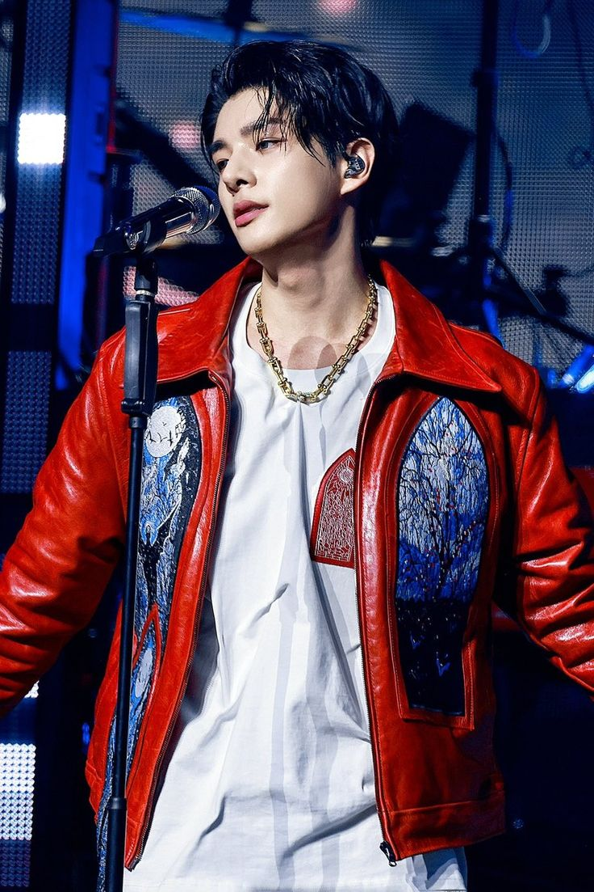

Karakter Favorit Saya: Sim Jaeyun
Saya suka Sim Jaeyun karena pribadinya yang berani, baik, sopan, pekerja keras dan berbakat. Ia berani keluar dari zona nyaman untuk mengejar mimpi meskipun harus pindah negara. Jake punya kemampuan vokal yang bagus, bisa nge-rap, dan jago menari.
Biografi
Sim Jaeyun atau dikenal juga sebagai Jake adalah seorang idola K-pop lahir di Brisbane, Australia, pada 15 November 2002. Ia merupakan anggota boy group ENHYPEN yang dibentuk melalui program survival I-LAND pada tahun 2020. Ia dikenal sebagai sosok yang rendah hati, pekerja keras, dan penuh semangat. Dalam grup, Jake berperan sebagai vokalis, rapper, dan dancer. Jake mumpunyai hobi mendengar musik, olahraga, dan belanja. Jake juga sangat menyayangi anjing peliharaannya yang bernama Layla.